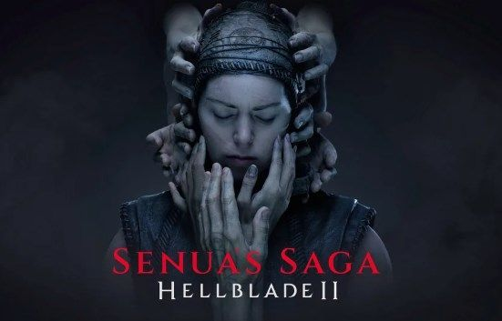

From our review: Dragon’s Dogma 2 is a strange and wonderful game that seems haunted by some of yesteryear’s bugaboos.
It is a retelling and reimplementation of all of those wonderful ideas from the 2012 cult-classic, including an awesome dynamic world and some of the best combat in the genre that integrates a subtle but amazingly complex physics system.
On the other hand, its finicky ally AI, clunky climbing, choppy frame rate, and camera with a habit of going haywire at the worst times are all “features” I wish hadn’t been brought back for another round.
Even so, there’s an action-RPG here that’s richly rewarding and incomparable to its contemporaries if you can be patient with its quirks and open to embracing its hands-off open-world and quest designs.
-Jarrett Green
From our review: Final Fantasy VII Rebirth impressively builds off of what Remake set in motion as both a best-in-class action-RPG full of exciting challenge and depth, and as an awe-inspiring recreation of a world that has meant so much to so many for so long. After 82 hours to finish the main story and complete a decent chunk of sidequests and optional activities, there's still much to be done, making this pivotal section of the original feel absolutely massive. Minigames, sidequests, and other enticing diversions fill the spaces of its vast and sprawling regions, painting a new and more vivid picture of these familiar locations. But more than just being filled with things to do, Rebirth is often a powerful representation of Final Fantasy VII's most memorable qualities. It does fumble the execution of its ending, getting caught up in the mess of its multiple twisting timelines, but new moments and the overarching journey manage to evoke a deeper sense of reflection in spite of that. So, for as flawed as parts of how this classic has been reimagined might be, Rebirth still stands out as something both thrilling and unexpectedly impactful. – Michael Higham
From our review: Senua’s Saga: Hellblade II delivers a spellbinding adventure packed with cinematic spectacle and story surprises that maintains a surging sense of forward momentum and never wastes a second of its slender run time. Its combat manages to feel consistently intimidating and immediate despite its mechanical simplicity, and its perspective-based puzzles regularly scratch cerebral itches even though they largely rehash or rework concepts from Senua’s previous story. A journey as brutal as it is beautiful delivered with hardware-pushing visuals and persistently absorbing audio, Senua’s Saga: Hellblade II is another Viking-worthy feast for the senses that meets the high bar set by its predecessor, even if it never really manages to clear it. – Tristan Ogilvie
From our review: Tekken 8 is an amazing new entry in the long-running series. Interesting tweaks to its classic fighting systems, a full suite of fun offline modes, great new characters, incredible training tools, and a vastly improved online experience all add up to a fighting game I will be playing for many years to come. By honoring its legacy, but continuing to move forward, Tekken 8 manages to stand out as something special. – Ronny Barrier
The Stalker 2 story will take you to the Heart of Chornobyl – deep within the dangerous Exclusion Zone. This game is a sequel to the events of the original Stalker trilogy, although developer GSC Game World has said that no prior knowledge of the series is necessary to enjoy and understand Heart of Chornobyl. While details are light right now, we know that we'll be playing as a character named Skif, and that our actions will have both short-term consequences and global outcomes on Stalker 2's non-linear narrative.
Much like the original, the Silent Hill 2 remake's story revolves around protagonist James Sunderland as he navigates some deep psychological torment. After receiving a letter from his dead wife, Mary, James is summoned back to their beloved vacation destination of Silent Hill to pursue her. Cue a living nightmare in which James faces a number of horrifying enemies, including the infamous Bubble Head Nurses and everyone's favorite conical-headed baddie. In its reimagining of Silent Hill 2, Konami and Bloober Team strives to repackage a classic survival horror story for a brand new audience, without sacrificing the tense atmosphere or stylistic heart of the original. Being a remake of arguably the most famous game in the franchise, we already know the broad narrative strokes of how Bloober Team's Silent Hill 2 remake will probably play out. That's because the developer is dedicated to providing "the best possible emotions - both to those who played the original over 20 years ago, and to those for whom this will be their first approach to the famous series" [via Eurogamer]. We won't spoil things for you if the latter applies, but just know that nothing is as it seems in Silent Hill.
Should we have connected? That's the prevailing message of the first Death Stranding 2 trailers, and there's so many weird and wonderful things happening throughout its four-minute runtime that you'll twist your mind in knots trying to figure it all out. We see what appears to be an older Sam Porter, a fully-healed Fragile, and an extinction entity cult whose leader is wearing Amelie's necklace and haircut, and hiding their face with Higgs' signature death mask. There's mention of a new private corporation, APAC (Automated Public Assistance Company), more overt nautical themes, and a potential Fragile Express replacement called Drawbridge – which incorporates both a 'rope' and 'stick' motif. There's also very real indications that we'll be dealing with multiple alternate realities connected via the beach, with potential variants of Sam Porter, BB, Lou, Fragile, and others to contend with. Let's be honest, we'll be unpicking all of this for months (if not years) to come. But here's something we do know with 100% certainty: Hideo Kojima scrapped the entire story after the COVID-19 pandemic. Speaking at The Game Awards 2022, the director and writer said this of the Death Stranding 2 story: "I had the story written before the pandemic. But after experiencing the pandemic, I just rewrote the whole story from scratch." Kojima then added this comment with a smile, speaking to his uncanny ability to predict events through games like Metal Gear Solid 2 and Death Stranding, "I also didn't want to predict any more futures, so I rewrote it." The version of the Death Stranding 2 story remains a closely guarded secret then, although Kojima Productions has given us a hint of what's to come: "In Death Stranding 2: On the Beath, embark on an inspiring mission of human connection beyond the UCA. Sam – with companions by his side –sets out on a new journey to save humanity from extinction. Join them as they traverse a world beset by otherworldly enemies, obstacles, and a haunting question: should we have connected?"